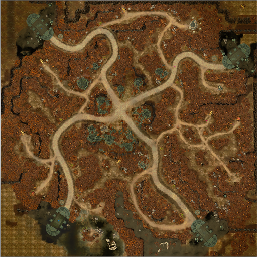
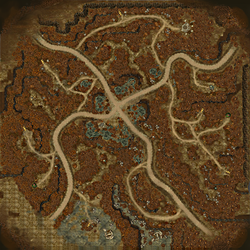

BATTLE MAPS / 8 CORE SCENES
战场地图
同一张地图可以承载不同的玩法模式。这里先看地图地形、路线、物件数量，再看它如何改变战术。

RULE / 规则
八个主要场景：原版地图图鉴
BORDERLANDS
经典边境之地
三路推进 · 41×41 地形块
查看场景物件与模式映射 ↗APOCALYPSE
末日边境
三路转化军团 · 41×41 地形块
查看场景物件与模式映射 ↗NEW YEAR
新年边境
季节三路 · 41×41 地形块
查看场景物件与模式映射 ↗
OUTPOST
前哨
一条主要兵线 · 26×26 地形块
查看场景物件与模式映射 ↗
DRAGONWALD
龙林
迷宫 + 护送 · 60×60 地形块
查看场景物件与模式映射 ↗
CO-OP TRIAL
合作试炼
四向防守 · 28×28 地形块
查看场景物件与模式映射 ↗
SOLO EPISODE
单人试炼
探索 + 防守 · 28×28 地形块
查看场景物件与模式映射 ↗
TUTORIAL
专用教学
脚本教学走廊 · 26×26 地形块
查看场景物件与模式映射 ↗RULE / 规则
八张场景的空间参数表
RULE / 规则
还有另外 17 个场景吗？
有。仓库去重后总共是 25 个场景；本页优先突出主列表生产允许配置实际涉及的 8 个场景，其他 17 个主要是历史场景、人数变体、PvE 原型和开发测试。